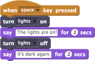
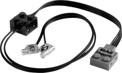

Ligue motores ou luzes.

Acende as luzes por 2 segundos quando a tecla espaço é pressionada, e depois as apaga.

Você pode selecionar um dispositivo LEGO-WeDo compatível no menu: o 'motor' liga todos os motores do dispositivo central WeDo. Para controlar dois motores separadamente, você pode usar 'motor A' e 'motor B'. Observação: A LEGO recomenda que apenas um motor seja conectado ao dispositivo para limitar o consumo de energia.
Para usar o recurso ligar, você precisa de motor(es) WeDo ou luzes conectadas ao seu computador por meio de um dispositivo LEGO WeDo.

